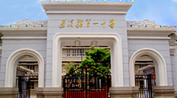
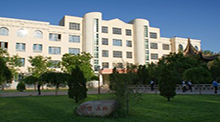
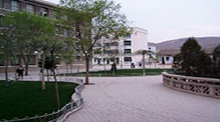
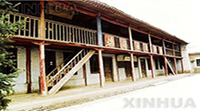
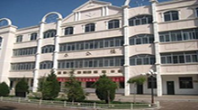

我的母校

通渭一中创建于1939年9月4日，初称通渭县立初级中学，1942年增设高中部，新中国成立后更名为"甘肃省通渭县中学"，1985年定名为"甘肃省通渭县第一中学"，2004年起停招初中生，至2006年改制为普通高级中学，2007年通过市级示范性普通高中验收，被命名为定西市示范性普通高中。

通渭一中办学理念 ，在秉承百年校训“学优品粹”的基础上，与时俱进，以新时期国家教育方针和改革方向为依据，集全校师生之思想，广泛征求社会、家长之意见而确立，为规范学校办学行为和保持学校可持续发展起到了积极的引领和推动作用。“以人为本”的教育理念，体现了学校办学的学生观和教师观。

学校先后被国家体委、国家教委授予先进单位，被省委、省政府授予“二五”普法先进单位，被团中央、农业部、中国科协授予“实践教育活动”先进集体，多次被市委、市政府和县委、县政府授予 “教育系统先进单位”“文明单位”“高考工作先进单位”“未成年人思想道德建设先进单位”等荣誉称号。

学校现设4个年级组、11个教研组。现有教职工558人，其中专任教师440人。硕士研究生学历教师5人，本科学历教师215人，专任教师学历达标率为91.7%。有中学高级教师73人（其中3人为特级教师），中学一级教师98人；有省级骨干教师9人，市级学科带头人3人，市级骨干教师22人，县级骨干教师42人。

通渭一中秉承“学优品粹”之校训，坚持“德育为首，教学为主，素质为基，育人为本”的办学宗旨和“以人为本，民主治校，科学管理，创新发展”的办学理念，突出“抓德育持之以恒、抓常规夯实基础、抓教研开拓创新、抓管理以人为本、抓队伍提高素质、抓质量争创品牌、抓安全防患未然、抓后勤服务教学”。